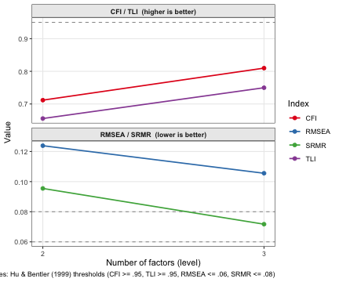

ackwards supports three factor extraction engines. They share the same downstream machinery — the same rotation, the same tenBerge scoring weights, the same between-level correlation algebra — but differ in their statistical model and what they report. This vignette explains when each one is appropriate and what the differences look like in practice.
The three engines at a glance
"pca" |
"efa" |
"esem" |
|
|---|---|---|---|
| What it models | Total item variance | Common (latent) variance | Common (latent) variance |
| Engine substrate | psych::principal() |
psych::fa() |
lavaan |
| Communalities | All 1.0 (by definition) | Estimated from data | Estimated from data |
| Correlations | Pearson or polychoric | Pearson or polychoric | Pearson or polychoric |
| Estimators | Eigen-decomposition |
minres (OLS), ml, or pa — via
psych’s fm=
|
ML, MLR — continuous (+ FIML for missing data); WLSMV, ULSMV — ordinal |
| Fit indices | Eigenvalues only | χ², RMSEA, TLI, BIC | CFI, TLI, RMSEA, SRMR, χ² |
| Loading SEs | No | No | Yes |
| Speed | Fast | Moderate | Slowest |
| Best for | Exploration, large k | Latent-factor inference | Model evaluation, loading SEs, ordinal or continuous |
All three produce the same labels (m{k}f{j}), the same
tidy() / glance() / augment()
interface, and comparable between-level edges for well-structured data.
The hierarchy they reveal is usually the same; the statistical
guarantees differ.
Setup
We use the BFI-25 with polychoric correlations throughout so that differences in output reflect the engine, not the correlation basis.
PCA: components from total variance
PCA extracts principal components — linear combinations of the observed variables that capture maximum variance, including measurement error. Every item is modeled with communality 1.0: the components account for 100% of each item’s variance. This is not a true latent variable model; it is a data reduction method.
In the bass-ackwards context, PCA is the natural default. It is fast,
always converges, and produces eigenvalues that can guide the choice of
k. Waller (2007) showed that the between-level algebra
(W'RW) holds exactly for components, making the edges
algebraically exact rather than approximated from materialized
scores.
x_pca <- ackwards(bfi, k_max = 3, cor = "polychoric")
x_pca
#>
#> ── Bass-Ackwards Analysis (ackwards) ───────────────────────────────────────────
#> Engine: pca
#> Rotation: varimax
#> Basis: polychoric
#> n: 875
#> k (max): 3
#>
#> ── Levels ──
#>
#> ✔ k = 1: 1 factor, 23.2% variance
#> ✔ k = 2: 2 factors, 35.5% variance
#> ✔ k = 3: 3 factors, 44.6% variance
#>
#> ── Edges ──
#>
#> 5 of 8 edges have |r| ≥ 0.3
#> ────────────────────────────────────────────────────────────────────────────────
#> Note: This is a series of linked solutions, not a fitted hierarchical model.
#> Cross-level edges are descriptive score correlations. Per-level fit indices
#> (EFA/ESEM) describe how well a k-factor model fits the items at that level --
#> they do not validate the edges or the hierarchy itself.The “fit” for PCA is just the eigenvalue of each component — the amount of variance it captures. There are no chi-square tests, no RMSEA, no model rejection.
tidy(x_pca, what = "fit")
#> level statistic value
#> 1 1 eigenvalue.m1f1 5.802803
#> 2 2 eigenvalue.m2f1 5.802803
#> 3 2 eigenvalue.m2f2 3.067627
#> 4 3 eigenvalue.m3f1 5.802803
#> 5 3 eigenvalue.m3f2 3.067627
#> 6 3 eigenvalue.m3f3 2.275419EFA: factors from common variance
EFA extracts latent factors that model only the variance shared among items. Each item retains a unique variance (communality < 1.0) that the factors do not explain. This is the classical common-factor model, and it is more appropriate than PCA when you believe the items are fallible indicators of latent constructs rather than the constructs themselves.
x_efa <- ackwards(bfi, k_max = 3, engine = "efa", cor = "polychoric")
x_efa
#>
#> ── Bass-Ackwards Analysis (ackwards) ───────────────────────────────────────────
#> Engine: efa
#> Rotation: varimax
#> Basis: polychoric
#> n: 875
#> k (max): 3
#>
#> ── Levels ──
#>
#> ✔ k = 1: 1 factor, 20.3% variance
#> ✔ k = 2: 2 factors, 30.8% variance
#> ✔ k = 3: 3 factors, 37.7% variance
#>
#> ── Edges ──
#>
#> 5 of 8 edges have |r| ≥ 0.3
#> ────────────────────────────────────────────────────────────────────────────────
#> Note: This is a series of linked solutions, not a fitted hierarchical model.
#> Cross-level edges are descriptive score correlations. Per-level fit indices
#> (EFA/ESEM) describe how well a k-factor model fits the items at that level --
#> they do not validate the edges or the hierarchy itself.EFA produces genuine goodness-of-fit indices. These tell you whether the k factors are sufficient to reproduce the observed correlation matrix within sampling error.
tidy(x_efa, what = "fit")
#> level statistic value
#> 1 1 chi 5327.2295200
#> 2 1 dof 275.0000000
#> 3 1 p_value 0.0000000
#> 4 1 RMSEA 0.1448964
#> 5 1 TLI 0.3429279
#> 6 1 BIC 3464.3179512
#> 7 2 chi 3520.3788570
#> 8 2 dof 251.0000000
#> 9 2 p_value 0.0000000
#> 10 2 RMSEA 0.1220036
#> 11 2 TLI 0.5337688
#> 12 2 BIC 1820.0486615
#> 13 3 chi 2545.6948352
#> 14 3 dof 228.0000000
#> 15 3 p_value 0.0000000
#> 16 3 RMSEA 0.1077785
#> 17 3 TLI 0.6358514
#> 18 3 BIC 1001.1717891The RMSEA values here are large (> 0.10), indicating that 1–3 factors do not fully account for the BFI item correlations — unsurprising, because the true structure is 5 factors. Fit improves steadily from k = 1 to k = 3, which is exactly the kind of evidence bass-ackwards analysis is designed to make visible.
How close are EFA and PCA loadings?
For clean, continuous data with moderate-to-strong factor structure, EFA and PCA loadings are highly correlated but not identical. EFA loadings are systematically somewhat smaller because they model only the common variance; PCA inflates loadings by fitting noise alongside signal.
The table below compares primary loadings — the loading of each item on its dominant factor — for six representative items (two each from the Neuroticism, Extraversion, and Conscientiousness families) at k = 3. The Δ column is the teaching point: how much smaller EFA loadings are in absolute value once measurement error is partitioned into uniqueness. Using |EFA| − |PCA| keeps the attenuation consistently negative regardless of loading sign.
| PCA vs EFA: primary loadings for anchor items (k = 3) | ||||
| Item | Factor |
Loading
|
||
|---|---|---|---|---|
| PCA | EFA | Δ (|EFA| − |PCA|)1 | ||
| E1 | m3f1 | −0.61 | −0.55 | −0.06 |
| E2 | m3f1 | −0.70 | −0.67 | −0.03 |
| N1 | m3f2 | −0.78 | −0.75 | −0.03 |
| N2 | m3f2 | −0.79 | −0.76 | −0.03 |
| C1 | m3f3 | 0.66 | 0.62 | −0.04 |
| C2 | m3f3 | 0.64 | 0.61 | −0.03 |
| 1 Factor assignment and sign verified to match between engines. Delta uses |EFA| - |PCA| so attenuation is always negative regardless of loading sign. | ||||
EFA loadings for the same items are consistently a few points lower — the PCA loadings include some noise variance that EFA partitions into uniqueness. The factor structure (which items define which factor) is unchanged.
ESEM: EFA with full model diagnostics
ESEM (exploratory structural equation modeling, Asparouhov & Muthén, 2009) fits the same common-factor model as EFA but uses lavaan as the engine. ESEM is not an ordinal-only tool: it handles continuous items with maximum-likelihood estimators (ML, MLR — the default for continuous data) and ordinal items with WLSMV, and it unlocks three capabilities that EFA cannot provide:
- Standard errors for every loading, enabling confidence intervals and significance tests — for continuous and ordinal data.
-
Full maximum-likelihood estimation for continuous
data (ML/MLR), including FIML for missing data
(
missing = "fiml"), which uses all partially observed rows rather than deleting them. -
The WLSMV estimator for ordinal data, the
appropriate maximum-likelihood-adjacent estimator for categorical
indicators. When
cor = "polychoric"is set withengine = "esem", WLSMV is used automatically.
Those three are the only reasons to pay ESEM’s cost (a lavaan fit per level, occasional convergence trouble). EFA is otherwise a first-class reporting engine: it returns the same loadings, variance, and between-level edges plus per-level RMSEA and TLI — enough to report a hierarchy. Reach for ESEM when you specifically need loading standard errors (especially at smaller n), the field-standard WLSMV estimator for ordinal indicators, or true FIML for missing data; otherwise EFA is the simpler, faster choice.
x_esem <- ackwards(bfi, k_max = 3, engine = "esem", cor = "polychoric")
x_esem
#>
#> ── Bass-Ackwards Analysis (ackwards) ───────────────────────────────────────────
#> Engine: esem
#> Rotation: varimax
#> Basis: polychoric
#> n: 875
#> k (max): 3
#>
#> ── Levels ──
#>
#> ✔ k = 1: 1 factor, 23.5% variance
#> ✔ k = 2: 2 factors, 32.9% variance
#> ✔ k = 3: 3 factors, 39.5% variance
#>
#> ── Edges ──
#>
#> 5 of 8 edges have |r| ≥ 0.3
#> ────────────────────────────────────────────────────────────────────────────────
#> Note: This is a series of linked solutions, not a fitted hierarchical model.
#> Cross-level edges are descriptive score correlations. Per-level fit indices
#> (EFA/ESEM) describe how well a k-factor model fits the items at that level --
#> they do not validate the edges or the hierarchy itself.ESEM fit indices include CFI and SRMR in addition to RMSEA and TLI, giving a richer picture of model adequacy. See the “Per-level fit” section below for how to report and interpret these indices.
Loading standard errors and confidence intervals
The unique output from ESEM is the rotation-aware standard
error of every loading. These SEs are now returned as part of
tidy(what = "loadings"), alongside ci_lower
and ci_upper columns:
ld <- tidy(x_esem, what = "loadings")
head(ld)
#> level factor item loading se ci_lower ci_upper
#> 1 1 m1f1 A1 -0.3155807 0.02831633 -0.3710797 -0.2600817
#> 2 1 m1f1 A2 0.5584169 0.02316777 0.5130089 0.6038249
#> 3 1 m1f1 A3 0.6424786 0.01971862 0.6038308 0.6811264
#> 4 1 m1f1 A4 0.4261675 0.02777029 0.3717387 0.4805962
#> 5 1 m1f1 A5 0.6588505 0.01870826 0.6221830 0.6955180
#> 6 1 m1f1 C1 0.4138252 0.02754885 0.3598304 0.4678200The intervals are computed as loading ± z × SE (default 95%;
set conf_level = 0.99 for wider intervals). With the 875
complete cases used here the SEs are fairly small; with smaller samples
they become important for judging which loadings are meaningfully
non-zero. For PCA and EFA objects the se,
ci_lower, and ci_upper columns are present but
NA — those engines carry no loading SEs.
Per-level fit: what it tells you (and what it doesn’t)
The key distinction
Bass-ackwards produces a series of independent factor solutions, not a fitted hierarchical model. The between-level edges are descriptive correlations between factor scores — they have no sampling distribution of their own. Per-level fit indices therefore describe something narrower: does a k-factor model adequately reproduce the items at this level?
That is a real, bounded question. A level that fits terribly is one you shouldn’t over-interpret — the k factors are not cleanly separating the items. A level that fits well tells you the factor structure at that depth is stable. But good fit at k = 3 does not validate the edges connecting k = 3 to k = 2; it only says the k = 3 solution itself is trustworthy. Keep that boundary in mind whenever you report or interpret fit.
The converse question comes up often: if the k = 3 solution fits
badly, should I distrust the edges connecting k = 2 to k = 3? The
honest answer is nuanced. The edge correlation is still a
faithful description of the relationship between the k
= 2 and k = 3 factor scores as extracted — the arithmetic is not wrong.
What poor fit undermines is the interpretation of the k
= 3 factors themselves: if three factors don’t cleanly reproduce the
items, then “factor m3f2” is a shakier construct, and any
edge incident to it inherits that shakiness. So a badly-fitting
level does weaken the edges touching it — not because the correlation is
miscomputed, but because one of the things it connects is poorly
defined. The edges between two well-fitting levels are on
firmer ground than edges touching a poorly-fitting one.
Reporting fit with tidy() and
autoplot()
tidy(what = "fit") returns the raw long table. For
reporting, format = "wide" gives one row per level:
tidy(x_esem, what = "fit", format = "wide")
#> level chi dof p_value CFI TLI RMSEA SRMR BIC
#> 1 2 3616.834 251 0 0.7117569 0.6554864 0.1238665 0.09547997 NA
#> 2 3 2448.356 228 0 0.8098533 0.7498069 0.1055573 0.07172502 NAtidy() does not flag rows against a threshold — the Hu
& Bentler (1999) conventional cutoffs (CFI/TLI ≥ .95, RMSEA ≤ .06,
SRMR ≤ .08) are conventional and contested, so a pass/fail column would
overstate their authority. Instead they appear only as visual/inline
reference points in autoplot() and
summary():
Thresholds are conventional and contested. They were derived from specific simulation conditions (continuous, well-distributed items; balanced designs). WLSMV fit for ordinal data tends to produce lower CFI and higher RMSEA than ML on the same underlying structure; do not interpret WLSMV cutoffs as strictly as ML-based rules. Use them as a rough orientation, not a gatekeeping criterion.
autoplot(x, what = "fit") visualises the trajectory
across levels, with cutoff reference lines:
autoplot(x_esem, what = "fit")
The shape of the trajectory matters as much as the absolute values: a sharp improvement from k = 2 to k = 3 suggests the third factor is capturing genuine signal; flat or worsening indices suggest adding another level is splitting noise.
The examples in this vignette deliberately stop at
k_max = 3 so the ESEM chunks build quickly and the tables
stay legible — not because the BFI hierarchy ends there. For these data
suggest_k() points to roughly k = 5 (see
the vignette("ackwards-suggest-k")), so a real analysis
would extend the trajectory further and read the fit curve across all
five levels. The truncated plot here shows the mechanics of
reading a fit trajectory, not the recommended depth for the BFI.
glance() now also carries the deepest-level fit for
quick inspection:
glance(x_esem)
#> engine rotation cor k_max n_obs deepest_converged n_edges CFI
#> 1 esem varimax polychoric 3 875 3 8 0.8098533
#> TLI RMSEA SRMR BIC
#> 1 0.7498069 0.1055573 0.07172502 NAShould you care about fit in a bass-ackwards workflow?
It depends on your goal:
- Exploratory (finding the hierarchical structure): fit is a secondary check. Start with PCA for speed, confirm with EFA or ESEM. If a level’s fit is poor, consider whether you have too many factors at that depth, or whether the items at that level are genuinely multidimensional.
-
Confirmatory / publication: fit is table-stakes for
ESEM or EFA. Report per-level CFI, TLI, RMSEA (and SRMR for ESEM)
alongside the hierarchy. The wide table and
autoplot(what = "fit")are designed for this. - Ordinal data: WLSMV (ESEM) gives fit indices appropriate for categorical items; EFA’s RMSEA/TLI under Pearson correlation is a rougher diagnostic.
The bottom line: per-level fit qualifies each level of the hierarchy; it does not bless the hierarchy as a whole. Use it to decide how deep the structure is credibly resolved, not to claim the overall model is “good”.
How much do the edges differ?
The primary output of bass-ackwards analysis is the between-level edges. For well-structured, continuous data, all three engines should agree closely on the hierarchy.
The table below compares the primary-parent edge strength for every adjacent level transition. The Δ column is the shift in connection strength (|EFA| − |PCA|) — a direct, sign-robust measure of how much the latent-variable model changes your inference about the hierarchy.
| Primary-parent edges: PCA vs EFA | ||||
| From | To |
Edge strength (r)
|
||
|---|---|---|---|---|
| PCA | EFA | Δ (EFA − PCA)1 | ||
| m1f1 | m2f1 | 0.89 | 0.91 | 0.02 |
| m1f1 | m2f2 | 0.46 | 0.42 | −0.04 |
| m2f1 | m3f1 | 0.87 | 0.89 | 0.02 |
| m2f2 | m3f2 | 0.99 | 0.98 | −0.01 |
| m2f1 | m3f3 | 0.48 | 0.44 | −0.04 |
| 1 NA in either column means the engines disagree on the primary parent for that factor. | ||||
The r values are very close between engines: the hierarchy that PCA reveals is essentially the same hierarchy that EFA reveals. This convergence across methods is reassuring — it suggests the structure is real and not an artifact of the extraction method.
How clean this convergence looks depends on how strong the underlying
structure is. The simulated sim16 dataset
(?sim16) is an idealized case — its planted 1 → 2
→ 4 hierarchy is strong enough that engines and suggest_k()
criteria agree almost perfectly. Real data is messier: for
bfi25 the suggest_k() criteria span k = 4–6
even though the engines agree on the edges. Treat clean cross-method
consensus as the best case, not the norm; the
vignette("ackwards-suggest-k") develops this
idealized-vs-realistic contrast in full.
When the engines disagree on edges, that is itself informative: it usually indicates factors whose definition depends on whether you account for measurement error (EFA/ESEM) or not (PCA).
Choosing an engine
| Situation | Recommendation |
|---|---|
| Exploratory, large k, unknown structure | Start with "pca"
|
| Report a hierarchy with per-level fit (RMSEA/TLI) |
"efa" — a complete reporting engine |
| You specifically need loading SEs / CIs (especially smaller n) | "esem" |
| Ordinal items and you want the field-standard WLSMV estimator |
"esem" with cor = "polychoric"
|
| Missing data you want handled by true FIML |
"esem" (ML/MLR) or PCA/EFA with
missing = "fiml"
|
Replicating Goldberg (2006) or
psych::bassAckward()
|
"pca" (the default engine; fm applies only
to "efa") |
A practical workflow: start with PCA to get a feel for the hierarchy and choose k. EFA is enough to confirm and report — it returns loadings, variance, edges, and per-level RMSEA/TLI. Reach for ESEM only when you need one of the three things it adds (loading SEs, WLSMV, or FIML); it is not a required “publication” upgrade. If PCA and EFA/ESEM edges agree, you have robust evidence for the hierarchy; if they disagree, investigate why.
Missing data
ackwards() accepts a missing argument
controlling how incomplete rows are handled before the correlation
matrix, engine fit, and edges are computed. The full per-engine
semantics — including the minor ESEM ML/MLR pairwise fit-vs-edges
inconsistency and the $meta fields that record it — are
documented in ?ackwards. In brief:
-
"pairwise"(default) — all available observations, pairwise. MCAR-valid, full N; warns when NAs are present. -
"listwise"— complete cases only, applied before all steps, so the correlation matrix, fit, and edges are fully consistent. Valid for all engines. -
"fiml"— Full Information ML, on two routes. Forengine = "esem"(withestimator = "ML"or"MLR"), lavaan estimates under FIML and the edges derive from its FIML saturated model. Forengine = "pca"or"efa"on the Pearson basis, the correlation matrix is estimated bypsych::corFiml()— full-information ML under multivariate normality, MAR-valid — and fed to the usual between-level algebra; the route announces itself via a message. Errors for WLSMV/ULSMV (limited-information estimators have no FIML extension) and for a non-Pearson PCA/EFA basis (corFiml()estimates a multivariate-normal matrix). FIML improves estimation but does not impute items, sokeep_scores = TRUEstill yieldsNAfor incomplete rows.
FIML for continuous PCA/EFA
For continuous data with MAR missingness, pass
missing = "fiml" directly — more principled than pairwise
deletion, which is only MCAR-valid:
# sim16 is continuous, so FIML's normality assumption is appropriate here.
set.seed(1)
sim_na <- sim16
for (j in seq_len(ncol(sim_na))) sim_na[sample(nrow(sim_na), 60L), j] <- NA
x_fiml <- ackwards(sim_na, k_max = 4, engine = "efa", missing = "fiml")
#> ℹ `missing = "fiml"`: correlation matrix estimated via `psych::corFiml()`
#> (full-information ML).
#> ℹ Fit indices use N = 1000 (`n_obs = "total"`); point estimates (loadings,
#> edges) are unaffected by this choice.
#> ! Fit indices are approximate: a FIML correlation matrix is fed into a
#> normal-theory EFA (a two-step procedure). See `?ackwards` (`n_obs`).
x_fiml
#>
#> ── Bass-Ackwards Analysis (ackwards) ───────────────────────────────────────────
#> Engine: efa
#> Rotation: varimax
#> Basis: pearson
#> n: 1,000
#> k (max): 4
#>
#> ── Levels ──
#>
#> ✔ k = 1: 1 factor, 23.3% variance
#> ✔ k = 2: 2 factors, 38.7% variance
#> ✔ k = 3: 3 factors, 48.2% variance
#> ✔ k = 4: 4 factors, 56.8% variance
#>
#> ── Edges ──
#>
#> 9 of 20 edges have |r| ≥ 0.3
#> ────────────────────────────────────────────────────────────────────────────────
#> Note: This is a series of linked solutions, not a fitted hierarchical model.
#> Cross-level edges are descriptive score correlations. Per-level fit indices
#> (EFA/ESEM) describe how well a k-factor model fits the items at that level --
#> they do not validate the edges or the hierarchy itself.Under the hood this estimates the correlation matrix with
psych::corFiml() and runs the normal W'RW
algebra on it, so the loadings and edges are exactly what the manual
ackwards(psych::corFiml(sim_na), …) correlation-matrix call
would give (that seam remains
available for non-standard cases, e.g. a FIML matrix you have already
computed elsewhere).
Two caveats matter. First, the fit-index N is your
call. FIML draws information from every partially observed row,
so there is no single “correct” N for the EFA fit indices, and the
n_obs argument selects it on this route:
"total" (the default — every row contributing to the FIML
likelihood, the convention a FIML analysis reports) is mildly
anti-conservative — χ² and RMSEA then treat partial rows as if
complete — while "complete" (the complete-case count) is
conservative. Crucially, the loading and edge point estimates
are unaffected by this choice — only the fit indices depend on
it, and those are approximate under this two-step (FIML matrix into
normal-theory EFA) route regardless of N. Second, the route assumes
multivariate normality, so it is for
continuous data only; for ordinal items use
engine = "esem" with cor = "polychoric"
instead.
Which option to use?
| Situation | Recommendation |
|---|---|
| Continuous data, little missingness |
"pairwise" (default) |
| Ordinal data + WLSMV, any missingness |
"pairwise" (uses available.cases —
MCAR-valid, full N) |
| Want consistent fit statistics and edges (continuous ML/MLR) | "listwise" |
| ESEM ML/MLR, meaningful missingness, want all rows used in estimation | "fiml" |
| Continuous PCA/EFA, MAR missingness |
"fiml" (via
psych::corFiml(); see above) |
| MAR-valid with ordinal (not yet built-in) | MI via lavaan.mi or mirt
|
Correlation-matrix input
When you have a pre-computed correlation matrix — a published table,
a polychoric matrix computed externally, a FIML
estimate for missing data, or a subset you want to analyse without
refitting — you can pass it directly to ackwards() or
suggest_k(). The matrix is auto-detected from its shape
(square, symmetric, unit diagonal).
R <- cor(bfi25, use = "pairwise.complete.obs")
# PCA from a correlation matrix (n_obs optional for PCA; required for EFA)
x_R <- ackwards(R, k_max = 5)
# EFA requires n_obs for fit indices:
x_efa_R <- ackwards(R, k_max = 5, engine = "efa", n_obs = 875L)
# Edges are identical to the raw-data run (same W'RW algebra):
x_d <- ackwards(bfi25, k_max = 5)
all.equal(tidy(x_R)$r, tidy(x_d)$r) # TRUE within floating-point toleranceConstraints
| Constraint | Detail |
|---|---|
| Engine |
"pca" and "efa" only — "esem"
errors (lavaan needs raw data) |
n_obs |
Required for "efa"; optional for "pca"
(stored as NA) |
cor argument |
Ignored (basis is fixed); warns if set explicitly |
missing argument |
Ignored; warns if set explicitly |
| Factor scores |
keep_scores = TRUE, augment(),
tidy(what = "scores") all error |
$cor field |
Stored as NA; shown as
"(user-supplied matrix)" in print |
suggest_k() with a correlation matrix
sk_R <- suggest_k(R, n_obs = 875L)
# CD is skipped (resampling requires raw item distributions)
# PA, MAP, and VSS run normallyPerformance with many items (ESEM)
Bass-ackwards analyses often involve large item pools, and ESEM is
the most expensive engine because it fits a separate lavaan
model at every level. Two automatic optimisations keep this
manageable:
-
Sample statistics are computed once. For ordinal
data (
cor = "polychoric", WLSMV), lavaan’s thresholds, polychoric matrix, and asymptotic weight matrix depend only on the data — not on the number of factors — soackwards()computes them at the first level and reuses them for every deeper level. This is the single biggest saving at large item counts. -
Levels can be fit in parallel. The per-level fits
are independent. Install
future.applyand set a future plan before your call; the default plan is sequential (no change in behaviour).
library(future)
plan(multisession, workers = 4) # parallel across background R sessions
x <- ackwards(items, k_max = 8, engine = "esem", cor = "polychoric", seed = 1)
plan(sequential) # restore when doneplan() comes from future (it is
not re-exported by future.apply), so load
future directly rather than reaching for
future.apply::plan(). Parallelism pays off only when the
per-level fits are genuinely heavy; for small problems the worker
startup cost can outweigh the gain. Results are reproducible across
plans when you pass seed. PCA and EFA compute their
correlation matrix once and do not need this.
If you only need the hierarchy (loadings and edges) and not ESEM’s
rotation-aware standard errors and per-level fit indices,
engine = "efa" with cor = "polychoric"
computes the polychoric matrix once and runs psych::fa() at
each level — substantially cheaper than k WLSMV fits — and recovers the
same structure.
References
Asparouhov, T., & Muthén, B. (2009). Exploratory structural equation modeling. Structural Equation Modeling, 16(3), 397–438.
Goldberg, L. R. (2006). Doing it all bass-ackwards. Journal of Research in Personality, 40(4), 347–358.
Hu, L., & Bentler, P. M. (1999). Cutoff criteria for fit indexes in covariance structure analysis: Conventional criteria versus new alternatives. Structural Equation Modeling, 6(1), 1–55.
Waller, N. G. (2007). A general method for computing hierarchical component structures by Goldberg’s Bass-Ackwards method. Journal of Research in Personality, 41(4), 745–752.